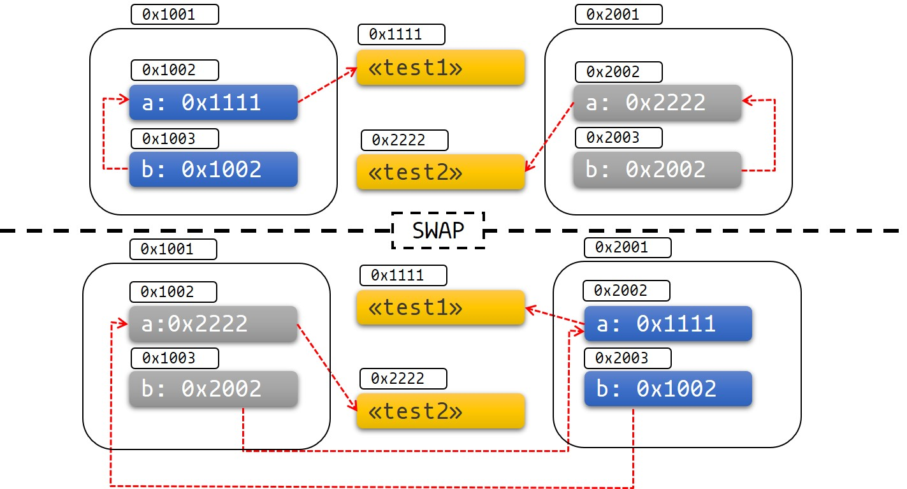

NOTE: this guide is currently undergoing a rewrite after a long time without much work. It is work in progress, much is missing, and what exists is a bit rough.
Introduction
This book is a guide to asynchronous programming in Rust. It is designed to help you take your first steps and to discover more about advanced topics. We don't assume any experience with asynchronous programming (in Rust or another language), but we do assume you're familiar with Rust already. If you want to learn about Rust, you could start with The Rust Programming Language.
This book has two main parts: part one is a beginners guide, it is designed to be read in-order and to take you from total beginner to intermediate level. Part two is a collection of stand-alone chapters on more advanced topics. It should be useful once you've worked through part one or if you already have some experience with async Rust.
You can navigate this book in multiple ways:
- You can read it front to back, in order. This is the recommend path for newcomers to async Rust, at least for part one of the book.
- There is a summary contents on the left-hand side of the webpage.
- If you want information about a broad topic, you could start with the topic index.
- If you want to find all discussion about a specific topic, you could start with the detailed index.
- You could see if your question is answered in the FAQs.
What is Async Programming?
In concurrent programming, the program does multiple things at the same time (or at least appears to). Programming with threads is one form of concurrent programming. Code within a thread is written in sequential style and the operating system executes threads concurrently. With async programming, concurrency happens entirely within your program (the operating system is not involved). An async runtime (which is just another crate in Rust) manages async tasks in conjunction with the programmer explicitly yielding control by using the await keyword.
Because the operating system is not involved, context switching in the async world is very fast. Furthermore, async tasks have much lower memory overhead than operating system threads. This makes async programming a good fit for systems which need to handle very many concurrent tasks and where those tasks spend a lot of time waiting (for example, for client responses or for IO).
Async programming also offers the programmer fine-grained control over how tasks are executed (levels of parallelism and concurrency, control flow, scheduling, and so forth). This means that async programming can be expressive as well as ergonomic for many uses.
Hello, world!
Just to give you a taste of what async Rust looks like, here is a 'hello, world' example. There is no concurrency, and it doesn't really take advantage of being async. It does define and use an async function, and it does print "hello, world!":
// Define an async function. async fn say_hello() { println!("hello, world!"); } #[tokio::main] // Boilerplate which lets us write `async fn main`, we'll explain it later. async fn main() { // Call an async function and await its result. say_hello().await; }
We'll explain everything in detail later. For now, note how we define an asynchronous function using async fn and call it using .await - an async function in Rust doesn't do anything unless it is awaited1.
Like all examples in this book, if you want to see the full example (including Cargo.toml, for example) or to run it yourself locally, you can find them in the book's GitHub repo: e.g., examples/hello-world.
TODO link: https://github.com/rust-lang/async-book/tree/master/examples/hello-world
Development of Async Rust
The async features of Rust have been in development for a while, but it is not a 'finished' part of the language. Async Rust (at least the parts available in the stable compiler and standard libraries) is reliable and performant. It is used in production in some of the most demanding situations at the largest tech companies. However, there are some missing parts and rough edges (rough in the sense of ergonomics rather than reliability). You are likely to stumble upon some of these parts during your journey with async Rust. For most missing parts, there are workarounds and these are covered in this book.
Currently, working with async iterators (also known as streams) is where most users find some rough parts. Some uses of async in traits are not yet well-supported. Async closures don't exist yet, and there is not a good solution for async destruction.
Async Rust is being actively worked on. If you want to follow development, you can check out the Async Working Group's home page which includes their roadmap. Or you could read the async project goal within the Rust Project.
Rust is an open source project. If you'd like to contribute to development of async Rust, start at the contributing docs in the main Rust repo.
This is actually a bad example because println is blocking IO and it is generally a bad idea to do blocking IO in async functions. We'll explain what blocking IO is in chapter TODO and why you shouldn't do blocking IO in an async function in chapter TODO.
Getting Started
Welcome to Asynchronous Programming in Rust! If you're looking to start writing asynchronous Rust code, you've come to the right place. Whether you're building a web server, a database, or an operating system, this book will show you how to use Rust's asynchronous programming tools to get the most out of your hardware.
What This Book Covers
This book aims to be a comprehensive, up-to-date guide to using Rust's async language features and libraries, appropriate for beginners and old hands alike.
-
The early chapters provide an introduction to async programming in general, and to Rust's particular take on it.
-
The middle chapters discuss key utilities and control-flow tools you can use when writing async code, and describe best-practices for structuring libraries and applications to maximize performance and reusability.
-
The last section of the book covers the broader async ecosystem, and provides a number of examples of how to accomplish common tasks.
With that out of the way, let's explore the exciting world of Asynchronous Programming in Rust!
Why Async?
We all love how Rust empowers us to write fast, safe software. But how does asynchronous programming fit into this vision?
Asynchronous programming, or async for short, is a concurrent programming model
supported by an increasing number of programming languages.
It lets you run a large number of concurrent
tasks on a small number of OS threads, while preserving much of the
look and feel of ordinary synchronous programming, through the
async/await syntax.
Async vs other concurrency models
Concurrent programming is less mature and "standardized" than regular, sequential programming. As a result, we express concurrency differently depending on which concurrent programming model the language is supporting. A brief overview of the most popular concurrency models can help you understand how asynchronous programming fits within the broader field of concurrent programming:
- OS threads don't require any changes to the programming model, which makes it very easy to express concurrency. However, synchronizing between threads can be difficult, and the performance overhead is large. Thread pools can mitigate some of these costs, but not enough to support massive IO-bound workloads.
- Event-driven programming, in conjunction with callbacks, can be very performant, but tends to result in a verbose, "non-linear" control flow. Data flow and error propagation is often hard to follow.
- Coroutines, like threads, don't require changes to the programming model, which makes them easy to use. Like async, they can also support a large number of tasks. However, they abstract away low-level details that are important for systems programming and custom runtime implementors.
- The actor model divides all concurrent computation into units called actors, which communicate through fallible message passing, much like in distributed systems. The actor model can be efficiently implemented, but it leaves many practical issues unanswered, such as flow control and retry logic.
In summary, asynchronous programming allows highly performant implementations that are suitable for low-level languages like Rust, while providing most of the ergonomic benefits of threads and coroutines.
Async in Rust vs other languages
Although asynchronous programming is supported in many languages, some details vary across implementations. Rust's implementation of async differs from most languages in a few ways:
- Futures are inert in Rust and make progress only when polled. Dropping a future stops it from making further progress.
- Async is zero-cost in Rust, which means that you only pay for what you use. Specifically, you can use async without heap allocations and dynamic dispatch, which is great for performance! This also lets you use async in constrained environments, such as embedded systems.
- No built-in runtime is provided by Rust. Instead, runtimes are provided by community maintained crates.
- Both single- and multithreaded runtimes are available in Rust, which have different strengths and weaknesses.
Async vs threads in Rust
The primary alternative to async in Rust is using OS threads, either
directly through std::thread
or indirectly through a thread pool.
Migrating from threads to async or vice versa
typically requires major refactoring work, both in terms of implementation and
(if you are building a library) any exposed public interfaces. As such,
picking the model that suits your needs early can save a lot of development time.
OS threads are suitable for a small number of tasks, since threads come with CPU and memory overhead. Spawning and switching between threads is quite expensive as even idle threads consume system resources. A thread pool library can help mitigate some of these costs, but not all. However, threads let you reuse existing synchronous code without significant code changes—no particular programming model is required. In some operating systems, you can also change the priority of a thread, which is useful for drivers and other latency sensitive applications.
Async provides significantly reduced CPU and memory overhead, especially for workloads with a large amount of IO-bound tasks, such as servers and databases. All else equal, you can have orders of magnitude more tasks than OS threads, because an async runtime uses a small amount of (expensive) threads to handle a large amount of (cheap) tasks. However, async Rust results in larger binary blobs due to the state machines generated from async functions and since each executable bundles an async runtime.
On a last note, asynchronous programming is not better than threads, but different. If you don't need async for performance reasons, threads can often be the simpler alternative.
Example: Concurrent downloading
In this example our goal is to download two web pages concurrently. In a typical threaded application we need to spawn threads to achieve concurrency:
fn get_two_sites() {
// Spawn two threads to do work.
let thread_one = thread::spawn(|| download("https://www.foo.com"));
let thread_two = thread::spawn(|| download("https://www.bar.com"));
// Wait for both threads to complete.
thread_one.join().expect("thread one panicked");
thread_two.join().expect("thread two panicked");
}However, downloading a web page is a small task; creating a thread for such a small amount of work is quite wasteful. For a larger application, it can easily become a bottleneck. In async Rust, we can run these tasks concurrently without extra threads:
async fn get_two_sites_async() {
// Create two different "futures" which, when run to completion,
// will asynchronously download the webpages.
let future_one = download_async("https://www.foo.com");
let future_two = download_async("https://www.bar.com");
// Run both futures to completion at the same time.
join!(future_one, future_two);
}Here, no extra threads are created. Additionally, all function calls are statically dispatched, and there are no heap allocations! However, we need to write the code to be asynchronous in the first place, which this book will help you achieve.
Custom concurrency models in Rust
On a last note, Rust doesn't force you to choose between threads and async. You can use both models within the same application, which can be useful when you have mixed threaded and async dependencies. In fact, you can even use a different concurrency model altogether, such as event-driven programming, as long as you find a library that implements it.
The State of Asynchronous Rust
Parts of async Rust are supported with the same stability guarantees as synchronous Rust. Other parts are still maturing and will change over time. With async Rust, you can expect:
- Outstanding runtime performance for typical concurrent workloads.
- More frequent interaction with advanced language features, such as lifetimes and pinning.
- Some compatibility constraints, both between sync and async code, and between different async runtimes.
- Higher maintenance burden, due to the ongoing evolution of async runtimes and language support.
In short, async Rust is more difficult to use and can result in a higher maintenance burden than synchronous Rust, but gives you best-in-class performance in return. All areas of async Rust are constantly improving, so the impact of these issues will wear off over time.
Language and library support
While asynchronous programming is supported by Rust itself, most async applications depend on functionality provided by community crates. As such, you need to rely on a mixture of language features and library support:
- The most fundamental traits, types and functions, such as the
Futuretrait are provided by the standard library. - The
async/awaitsyntax is supported directly by the Rust compiler. - Many utility types, macros and functions are provided by the
futurescrate. They can be used in any async Rust application. - Execution of async code, IO and task spawning are provided by "async runtimes", such as Tokio and async-std. Most async applications, and some async crates, depend on a specific runtime. See "The Async Ecosystem" section for more details.
Some language features you may be used to from synchronous Rust are not yet available in async Rust. Notably, Rust did not let you declare async functions in traits until 1.75.0 stable (and still has limitations on dynamic dispatch for those traits). Instead, you need to use workarounds to achieve the same result, which can be more verbose.
Compiling and debugging
For the most part, compiler- and runtime errors in async Rust work the same way as they have always done in Rust. There are a few noteworthy differences:
Compilation errors
Compilation errors in async Rust conform to the same high standards as synchronous Rust, but since async Rust often depends on more complex language features, such as lifetimes and pinning, you may encounter these types of errors more frequently.
Runtime errors
Whenever the compiler encounters an async function, it generates a state machine under the hood. Stack traces in async Rust typically contain details from these state machines, as well as function calls from the runtime. As such, interpreting stack traces can be a bit more involved than it would be in synchronous Rust.
New failure modes
A few novel failure modes are possible in async Rust, for instance
if you call a blocking function from an async context or if you implement
the Future trait incorrectly. Such errors can silently pass both the
compiler and sometimes even unit tests. Having a firm understanding
of the underlying concepts, which this book aims to give you, can help you
avoid these pitfalls.
Compatibility considerations
Asynchronous and synchronous code cannot always be combined freely. For instance, you can't directly call an async function from a sync function. Sync and async code also tend to promote different design patterns, which can make it difficult to compose code intended for the different environments.
Even async code cannot always be combined freely. Some crates depend on a specific async runtime to function. If so, it is usually specified in the crate's dependency list.
These compatibility issues can limit your options, so make sure to research which async runtime and what crates you may need early. Once you have settled in with a runtime, you won't have to worry much about compatibility.
Performance characteristics
The performance of async Rust depends on the implementation of the async runtime you're using. Even though the runtimes that power async Rust applications are relatively new, they perform exceptionally well for most practical workloads.
That said, most of the async ecosystem assumes a multi-threaded runtime. This makes it difficult to enjoy the theoretical performance benefits of single-threaded async applications, namely cheaper synchronization. Another overlooked use-case is latency sensitive tasks, which are important for drivers, GUI applications and so on. Such tasks depend on runtime and/or OS support in order to be scheduled appropriately. You can expect better library support for these use cases in the future.
async/.await Primer
async/.await is Rust's built-in tool for writing asynchronous functions
that look like synchronous code. async transforms a block of code into a
state machine that implements a trait called Future. Whereas calling a
blocking function in a synchronous method would block the whole thread,
blocked Futures will yield control of the thread, allowing other
Futures to run.
Let's add some dependencies to the Cargo.toml file:
[dependencies]
futures = "0.3"
To create an asynchronous function, you can use the async fn syntax:
#![allow(unused)] fn main() { async fn do_something() { /* ... */ } }
The value returned by async fn is a Future. For anything to happen,
the Future needs to be run on an executor.
// `block_on` blocks the current thread until the provided future has run to // completion. Other executors provide more complex behavior, like scheduling // multiple futures onto the same thread. use futures::executor::block_on; async fn hello_world() { println!("hello, world!"); } fn main() { let future = hello_world(); // Nothing is printed block_on(future); // `future` is run and "hello, world!" is printed }
Inside an async fn, you can use .await to wait for the completion of
another type that implements the Future trait, such as the output of
another async fn. Unlike block_on, .await doesn't block the current
thread, but instead asynchronously waits for the future to complete, allowing
other tasks to run if the future is currently unable to make progress.
For example, imagine that we have three async fn: learn_song, sing_song,
and dance:
async fn learn_song() -> Song { /* ... */ }
async fn sing_song(song: Song) { /* ... */ }
async fn dance() { /* ... */ }One way to do learn, sing, and dance would be to block on each of these individually:
fn main() {
let song = block_on(learn_song());
block_on(sing_song(song));
block_on(dance());
}However, we're not giving the best performance possible this way—we're
only ever doing one thing at once! Clearly we have to learn the song before
we can sing it, but it's possible to dance at the same time as learning and
singing the song. To do this, we can create two separate async fn which
can be run concurrently:
async fn learn_and_sing() {
// Wait until the song has been learned before singing it.
// We use `.await` here rather than `block_on` to prevent blocking the
// thread, which makes it possible to `dance` at the same time.
let song = learn_song().await;
sing_song(song).await;
}
async fn async_main() {
let f1 = learn_and_sing();
let f2 = dance();
// `join!` is like `.await` but can wait for multiple futures concurrently.
// If we're temporarily blocked in the `learn_and_sing` future, the `dance`
// future will take over the current thread. If `dance` becomes blocked,
// `learn_and_sing` can take back over. If both futures are blocked, then
// `async_main` is blocked and will yield to the executor.
futures::join!(f1, f2);
}
fn main() {
block_on(async_main());
}In this example, learning the song must happen before singing the song, but
both learning and singing can happen at the same time as dancing. If we used
block_on(learn_song()) rather than learn_song().await in learn_and_sing,
the thread wouldn't be able to do anything else while learn_song was running.
This would make it impossible to dance at the same time. By .await-ing
the learn_song future, we allow other tasks to take over the current thread
if learn_song is blocked. This makes it possible to run multiple futures
to completion concurrently on the same thread.
Under the Hood: Executing Futures and Tasks
In this section, we'll cover the underlying structure of how Futures and
asynchronous tasks are scheduled. If you're only interested in learning
how to write higher-level code that uses existing Future types and aren't
interested in the details of how Future types work, you can skip ahead to
the async/await chapter. However, several of the topics discussed in this
chapter are useful for understanding how async/await code works,
understanding the runtime and performance properties of async/await code,
and building new asynchronous primitives. If you decide to skip this section
now, you may want to bookmark it to revisit in the future.
Now, with that out of the way, let's talk about the Future trait.
The Future Trait
The Future trait is at the center of asynchronous programming in Rust.
A Future is an asynchronous computation that can produce a value
(although that value may be empty, e.g. ()). A simplified version of
the future trait might look something like this:
#![allow(unused)] fn main() { trait SimpleFuture { type Output; fn poll(&mut self, wake: fn()) -> Poll<Self::Output>; } enum Poll<T> { Ready(T), Pending, } }
Futures can be advanced by calling the poll function, which will drive the
future as far towards completion as possible. If the future completes, it
returns Poll::Ready(result). If the future is not able to complete yet, it
returns Poll::Pending and arranges for the wake() function to be called
when the Future is ready to make more progress. When wake() is called, the
executor driving the Future will call poll again so that the Future can
make more progress.
Without wake(), the executor would have no way of knowing when a particular
future could make progress, and would have to be constantly polling every
future. With wake(), the executor knows exactly which futures are ready to
be polled.
For example, consider the case where we want to read from a socket that may
or may not have data available already. If there is data, we can read it
in and return Poll::Ready(data), but if no data is ready, our future is
blocked and can no longer make progress. When no data is available, we
must register wake to be called when data becomes ready on the socket,
which will tell the executor that our future is ready to make progress.
A simple SocketRead future might look something like this:
pub struct SocketRead<'a> {
socket: &'a Socket,
}
impl SimpleFuture for SocketRead<'_> {
type Output = Vec<u8>;
fn poll(&mut self, wake: fn()) -> Poll<Self::Output> {
if self.socket.has_data_to_read() {
// The socket has data -- read it into a buffer and return it.
Poll::Ready(self.socket.read_buf())
} else {
// The socket does not yet have data.
//
// Arrange for `wake` to be called once data is available.
// When data becomes available, `wake` will be called, and the
// user of this `Future` will know to call `poll` again and
// receive data.
self.socket.set_readable_callback(wake);
Poll::Pending
}
}
}This model of Futures allows for composing together multiple asynchronous
operations without needing intermediate allocations. Running multiple futures
at once or chaining futures together can be implemented via allocation-free
state machines, like this:
/// A SimpleFuture that runs two other futures to completion concurrently.
///
/// Concurrency is achieved via the fact that calls to `poll` each future
/// may be interleaved, allowing each future to advance itself at its own pace.
pub struct Join<FutureA, FutureB> {
// Each field may contain a future that should be run to completion.
// If the future has already completed, the field is set to `None`.
// This prevents us from polling a future after it has completed, which
// would violate the contract of the `Future` trait.
a: Option<FutureA>,
b: Option<FutureB>,
}
impl<FutureA, FutureB> SimpleFuture for Join<FutureA, FutureB>
where
FutureA: SimpleFuture<Output = ()>,
FutureB: SimpleFuture<Output = ()>,
{
type Output = ();
fn poll(&mut self, wake: fn()) -> Poll<Self::Output> {
// Attempt to complete future `a`.
if let Some(a) = &mut self.a {
if let Poll::Ready(()) = a.poll(wake) {
self.a.take();
}
}
// Attempt to complete future `b`.
if let Some(b) = &mut self.b {
if let Poll::Ready(()) = b.poll(wake) {
self.b.take();
}
}
if self.a.is_none() && self.b.is_none() {
// Both futures have completed -- we can return successfully
Poll::Ready(())
} else {
// One or both futures returned `Poll::Pending` and still have
// work to do. They will call `wake()` when progress can be made.
Poll::Pending
}
}
}This shows how multiple futures can be run simultaneously without needing separate allocations, allowing for more efficient asynchronous programs. Similarly, multiple sequential futures can be run one after another, like this:
/// A SimpleFuture that runs two futures to completion, one after another.
//
// Note: for the purposes of this simple example, `AndThenFut` assumes both
// the first and second futures are available at creation-time. The real
// `AndThen` combinator allows creating the second future based on the output
// of the first future, like `get_breakfast.and_then(|food| eat(food))`.
pub struct AndThenFut<FutureA, FutureB> {
first: Option<FutureA>,
second: FutureB,
}
impl<FutureA, FutureB> SimpleFuture for AndThenFut<FutureA, FutureB>
where
FutureA: SimpleFuture<Output = ()>,
FutureB: SimpleFuture<Output = ()>,
{
type Output = ();
fn poll(&mut self, wake: fn()) -> Poll<Self::Output> {
if let Some(first) = &mut self.first {
match first.poll(wake) {
// We've completed the first future -- remove it and start on
// the second!
Poll::Ready(()) => self.first.take(),
// We couldn't yet complete the first future.
// Notice that we disrupt the flow of the `pool` function with the `return` statement.
Poll::Pending => return Poll::Pending,
};
}
// Now that the first future is done, attempt to complete the second.
self.second.poll(wake)
}
}These examples show how the Future trait can be used to express asynchronous
control flow without requiring multiple allocated objects and deeply nested
callbacks. With the basic control-flow out of the way, let's talk about the
real Future trait and how it is different.
trait Future {
type Output;
fn poll(
// Note the change from `&mut self` to `Pin<&mut Self>`:
self: Pin<&mut Self>,
// and the change from `wake: fn()` to `cx: &mut Context<'_>`:
cx: &mut Context<'_>,
) -> Poll<Self::Output>;
}The first change you'll notice is that our self type is no longer &mut Self,
but has changed to Pin<&mut Self>. We'll talk more about pinning in a later
section, but for now know that it allows us to create futures that
are immovable. Immovable objects can store pointers between their fields,
e.g. struct MyFut { a: i32, ptr_to_a: *const i32 }. Pinning is necessary
to enable async/await.
Secondly, wake: fn() has changed to &mut Context<'_>. In SimpleFuture,
we used a call to a function pointer (fn()) to tell the future executor that
the future in question should be polled. However, since fn() is just a
function pointer, it can't store any data about which Future called wake.
In a real-world scenario, a complex application like a web server may have
thousands of different connections whose wakeups should all be
managed separately. The Context type solves this by providing access to
a value of type Waker, which can be used to wake up a specific task.
Task Wakeups with Waker
It's common that futures aren't able to complete the first time they are
polled. When this happens, the future needs to ensure that it is polled
again once it is ready to make more progress. This is done with the Waker
type.
Each time a future is polled, it is polled as part of a "task". Tasks are the top-level futures that have been submitted to an executor.
Waker provides a wake() method that can be used to tell the executor that
the associated task should be awoken. When wake() is called, the executor
knows that the task associated with the Waker is ready to make progress, and
its future should be polled again.
Waker also implements clone() so that it can be copied around and stored.
Let's try implementing a simple timer future using Waker.
Applied: Build a Timer
For the sake of the example, we'll just spin up a new thread when the timer is created, sleep for the required time, and then signal the timer future when the time window has elapsed.
First, start a new project with cargo new --lib timer_future and add the imports
we'll need to get started to src/lib.rs:
#![allow(unused)] fn main() { use std::{ future::Future, pin::Pin, sync::{Arc, Mutex}, task::{Context, Poll, Waker}, thread, time::Duration, }; }
Let's start by defining the future type itself. Our future needs a way for the
thread to communicate that the timer has elapsed and the future should complete.
We'll use a shared Arc<Mutex<..>> value to communicate between the thread and
the future.
pub struct TimerFuture {
shared_state: Arc<Mutex<SharedState>>,
}
/// Shared state between the future and the waiting thread
struct SharedState {
/// Whether or not the sleep time has elapsed
completed: bool,
/// The waker for the task that `TimerFuture` is running on.
/// The thread can use this after setting `completed = true` to tell
/// `TimerFuture`'s task to wake up, see that `completed = true`, and
/// move forward.
waker: Option<Waker>,
}Now, let's actually write the Future implementation!
impl Future for TimerFuture {
type Output = ();
fn poll(self: Pin<&mut Self>, cx: &mut Context<'_>) -> Poll<Self::Output> {
// Look at the shared state to see if the timer has already completed.
let mut shared_state = self.shared_state.lock().unwrap();
if shared_state.completed {
Poll::Ready(())
} else {
// Set waker so that the thread can wake up the current task
// when the timer has completed, ensuring that the future is polled
// again and sees that `completed = true`.
//
// It's tempting to do this once rather than repeatedly cloning
// the waker each time. However, the `TimerFuture` can move between
// tasks on the executor, which could cause a stale waker pointing
// to the wrong task, preventing `TimerFuture` from waking up
// correctly.
//
// N.B. it's possible to check for this using the `Waker::will_wake`
// function, but we omit that here to keep things simple.
shared_state.waker = Some(cx.waker().clone());
Poll::Pending
}
}
}Pretty simple, right? If the thread has set shared_state.completed = true,
we're done! Otherwise, we clone the Waker for the current task and pass it to
shared_state.waker so that the thread can wake the task back up.
Importantly, we have to update the Waker every time the future is polled
because the future may have moved to a different task with a different
Waker. This will happen when futures are passed around between tasks after
being polled.
Finally, we need the API to actually construct the timer and start the thread:
impl TimerFuture {
/// Create a new `TimerFuture` which will complete after the provided
/// timeout.
pub fn new(duration: Duration) -> Self {
let shared_state = Arc::new(Mutex::new(SharedState {
completed: false,
waker: None,
}));
// Spawn the new thread
let thread_shared_state = shared_state.clone();
thread::spawn(move || {
thread::sleep(duration);
let mut shared_state = thread_shared_state.lock().unwrap();
// Signal that the timer has completed and wake up the last
// task on which the future was polled, if one exists.
shared_state.completed = true;
if let Some(waker) = shared_state.waker.take() {
waker.wake()
}
});
TimerFuture { shared_state }
}
}Woot! That's all we need to build a simple timer future. Now, if only we had an executor to run the future on...
Applied: Build an Executor
Rust's Futures are lazy: they won't do anything unless actively driven to
completion. One way to drive a future to completion is to .await it inside
an async function, but that just pushes the problem one level up: who will
run the futures returned from the top-level async functions? The answer is
that we need a Future executor.
Future executors take a set of top-level Futures and run them to completion
by calling poll whenever the Future can make progress. Typically, an
executor will poll a future once to start off. When Futures indicate that
they are ready to make progress by calling wake(), they are placed back
onto a queue and poll is called again, repeating until the Future has
completed.
In this section, we'll write our own simple executor capable of running a large number of top-level futures to completion concurrently.
For this example, we depend on the futures crate for the ArcWake trait,
which provides an easy way to construct a Waker. Edit Cargo.toml to add
a new dependency:
[package]
name = "timer_future"
version = "0.1.0"
authors = ["XYZ Author"]
edition = "2021"
[dependencies]
futures = "0.3"
Next, we need the following imports at the top of src/main.rs:
use futures::{
future::{BoxFuture, FutureExt},
task::{waker_ref, ArcWake},
};
use std::{
future::Future,
sync::mpsc::{sync_channel, Receiver, SyncSender},
sync::{Arc, Mutex},
task::Context,
time::Duration,
};
// The timer we wrote in the previous section:
use timer_future::TimerFuture;Our executor will work by sending tasks to run over a channel. The executor will pull events off of the channel and run them. When a task is ready to do more work (is awoken), it can schedule itself to be polled again by putting itself back onto the channel.
In this design, the executor itself just needs the receiving end of the task channel. The user will get a sending end so that they can spawn new futures. Tasks themselves are just futures that can reschedule themselves, so we'll store them as a future paired with a sender that the task can use to requeue itself.
/// Task executor that receives tasks off of a channel and runs them.
struct Executor {
ready_queue: Receiver<Arc<Task>>,
}
/// `Spawner` spawns new futures onto the task channel.
#[derive(Clone)]
struct Spawner {
task_sender: SyncSender<Arc<Task>>,
}
/// A future that can reschedule itself to be polled by an `Executor`.
struct Task {
/// In-progress future that should be pushed to completion.
///
/// The `Mutex` is not necessary for correctness, since we only have
/// one thread executing tasks at once. However, Rust isn't smart
/// enough to know that `future` is only mutated from one thread,
/// so we need to use the `Mutex` to prove thread-safety. A production
/// executor would not need this, and could use `UnsafeCell` instead.
future: Mutex<Option<BoxFuture<'static, ()>>>,
/// Handle to place the task itself back onto the task queue.
task_sender: SyncSender<Arc<Task>>,
}
fn new_executor_and_spawner() -> (Executor, Spawner) {
// Maximum number of tasks to allow queueing in the channel at once.
// This is just to make `sync_channel` happy, and wouldn't be present in
// a real executor.
const MAX_QUEUED_TASKS: usize = 10_000;
let (task_sender, ready_queue) = sync_channel(MAX_QUEUED_TASKS);
(Executor { ready_queue }, Spawner { task_sender })
}Let's also add a method to spawner to make it easy to spawn new futures.
This method will take a future type, box it, and create a new Arc<Task> with
it inside which can be enqueued onto the executor.
impl Spawner {
fn spawn(&self, future: impl Future<Output = ()> + 'static + Send) {
let future = future.boxed();
let task = Arc::new(Task {
future: Mutex::new(Some(future)),
task_sender: self.task_sender.clone(),
});
self.task_sender.try_send(task).expect("too many tasks queued");
}
}To poll futures, we'll need to create a Waker.
As discussed in the task wakeups section, Wakers are responsible
for scheduling a task to be polled again once wake is called. Remember that
Wakers tell the executor exactly which task has become ready, allowing
them to poll just the futures that are ready to make progress. The easiest way
to create a new Waker is by implementing the ArcWake trait and then using
the waker_ref or .into_waker() functions to turn an Arc<impl ArcWake>
into a Waker. Let's implement ArcWake for our tasks to allow them to be
turned into Wakers and awoken:
impl ArcWake for Task {
fn wake_by_ref(arc_self: &Arc<Self>) {
// Implement `wake` by sending this task back onto the task channel
// so that it will be polled again by the executor.
let cloned = arc_self.clone();
arc_self
.task_sender
.try_send(cloned)
.expect("too many tasks queued");
}
}When a Waker is created from an Arc<Task>, calling wake() on it will
cause a copy of the Arc to be sent onto the task channel. Our executor then
needs to pick up the task and poll it. Let's implement that:
impl Executor {
fn run(&self) {
while let Ok(task) = self.ready_queue.recv() {
// Take the future, and if it has not yet completed (is still Some),
// poll it in an attempt to complete it.
let mut future_slot = task.future.lock().unwrap();
if let Some(mut future) = future_slot.take() {
// Create a `LocalWaker` from the task itself
let waker = waker_ref(&task);
let context = &mut Context::from_waker(&waker);
// `BoxFuture<T>` is a type alias for
// `Pin<Box<dyn Future<Output = T> + Send + 'static>>`.
// We can get a `Pin<&mut dyn Future + Send + 'static>`
// from it by calling the `Pin::as_mut` method.
if future.as_mut().poll(context).is_pending() {
// We're not done processing the future, so put it
// back in its task to be run again in the future.
*future_slot = Some(future);
}
}
}
}
}Congratulations! We now have a working futures executor. We can even use it
to run async/.await code and custom futures, such as the TimerFuture we
wrote earlier:
fn main() {
let (executor, spawner) = new_executor_and_spawner();
// Spawn a task to print before and after waiting on a timer.
spawner.spawn(async {
println!("howdy!");
// Wait for our timer future to complete after two seconds.
TimerFuture::new(Duration::new(2, 0)).await;
println!("done!");
});
// Drop the spawner so that our executor knows it is finished and won't
// receive more incoming tasks to run.
drop(spawner);
// Run the executor until the task queue is empty.
// This will print "howdy!", pause, and then print "done!".
executor.run();
}Executors and System IO
In the previous section on The Future Trait, we discussed this example of
a future that performed an asynchronous read on a socket:
pub struct SocketRead<'a> {
socket: &'a Socket,
}
impl SimpleFuture for SocketRead<'_> {
type Output = Vec<u8>;
fn poll(&mut self, wake: fn()) -> Poll<Self::Output> {
if self.socket.has_data_to_read() {
// The socket has data -- read it into a buffer and return it.
Poll::Ready(self.socket.read_buf())
} else {
// The socket does not yet have data.
//
// Arrange for `wake` to be called once data is available.
// When data becomes available, `wake` will be called, and the
// user of this `Future` will know to call `poll` again and
// receive data.
self.socket.set_readable_callback(wake);
Poll::Pending
}
}
}This future will read available data on a socket, and if no data is available,
it will yield to the executor, requesting that its task be awoken when the
socket becomes readable again. However, it's not clear from this example how
the Socket type is implemented, and in particular it isn't obvious how the
set_readable_callback function works. How can we arrange for wake()
to be called once the socket becomes readable? One option would be to have
a thread that continually checks whether socket is readable, calling
wake() when appropriate. However, this would be quite inefficient, requiring
a separate thread for each blocked IO future. This would greatly reduce the
efficiency of our async code.
In practice, this problem is solved through integration with an IO-aware
system blocking primitive, such as epoll on Linux, kqueue on FreeBSD and
Mac OS, IOCP on Windows, and ports on Fuchsia (all of which are exposed
through the cross-platform Rust crate mio). These primitives all allow
a thread to block on multiple asynchronous IO events, returning once one of
the events completes. In practice, these APIs usually look something like
this:
struct IoBlocker {
/* ... */
}
struct Event {
// An ID uniquely identifying the event that occurred and was listened for.
id: usize,
// A set of signals to wait for, or which occurred.
signals: Signals,
}
impl IoBlocker {
/// Create a new collection of asynchronous IO events to block on.
fn new() -> Self { /* ... */ }
/// Express an interest in a particular IO event.
fn add_io_event_interest(
&self,
/// The object on which the event will occur
io_object: &IoObject,
/// A set of signals that may appear on the `io_object` for
/// which an event should be triggered, paired with
/// an ID to give to events that result from this interest.
event: Event,
) { /* ... */ }
/// Block until one of the events occurs.
fn block(&self) -> Event { /* ... */ }
}
let mut io_blocker = IoBlocker::new();
io_blocker.add_io_event_interest(
&socket_1,
Event { id: 1, signals: READABLE },
);
io_blocker.add_io_event_interest(
&socket_2,
Event { id: 2, signals: READABLE | WRITABLE },
);
let event = io_blocker.block();
// prints e.g. "Socket 1 is now READABLE" if socket one became readable.
println!("Socket {:?} is now {:?}", event.id, event.signals);Futures executors can use these primitives to provide asynchronous IO objects
such as sockets that can configure callbacks to be run when a particular IO
event occurs. In the case of our SocketRead example above, the
Socket::set_readable_callback function might look like the following pseudocode:
impl Socket {
fn set_readable_callback(&self, waker: Waker) {
// `local_executor` is a reference to the local executor.
// This could be provided at creation of the socket, but in practice
// many executor implementations pass it down through thread local
// storage for convenience.
let local_executor = self.local_executor;
// Unique ID for this IO object.
let id = self.id;
// Store the local waker in the executor's map so that it can be called
// once the IO event arrives.
local_executor.event_map.insert(id, waker);
local_executor.add_io_event_interest(
&self.socket_file_descriptor,
Event { id, signals: READABLE },
);
}
}We can now have just one executor thread which can receive and dispatch any
IO event to the appropriate Waker, which will wake up the corresponding
task, allowing the executor to drive more tasks to completion before returning
to check for more IO events (and the cycle continues...).
async/.await
In the first chapter, we took a brief look at async/.await.
This chapter will discuss async/.await in
greater detail, explaining how it works and how async code differs from
traditional Rust programs.
async/.await are special pieces of Rust syntax that make it possible to
yield control of the current thread rather than blocking, allowing other
code to make progress while waiting on an operation to complete.
There are two main ways to use async: async fn and async blocks.
Each returns a value that implements the Future trait:
// `foo()` returns a type that implements `Future<Output = u8>`.
// `foo().await` will result in a value of type `u8`.
async fn foo() -> u8 { 5 }
fn bar() -> impl Future<Output = u8> {
// This `async` block results in a type that implements
// `Future<Output = u8>`.
async {
let x: u8 = foo().await;
x + 5
}
}As we saw in the first chapter, async bodies and other futures are lazy:
they do nothing until they are run. The most common way to run a Future
is to .await it. When .await is called on a Future, it will attempt
to run it to completion. If the Future is blocked, it will yield control
of the current thread. When more progress can be made, the Future will be picked
up by the executor and will resume running, allowing the .await to resolve.
async Lifetimes
Unlike traditional functions, async fns which take references or other
non-'static arguments return a Future which is bounded by the lifetime of
the arguments:
// This function:
async fn foo(x: &u8) -> u8 { *x }
// Is equivalent to this function:
fn foo_expanded<'a>(x: &'a u8) -> impl Future<Output = u8> + 'a {
async move { *x }
}This means that the future returned from an async fn must be .awaited
while its non-'static arguments are still valid. In the common
case of .awaiting the future immediately after calling the function
(as in foo(&x).await) this is not an issue. However, if storing the future
or sending it over to another task or thread, this may be an issue.
One common workaround for turning an async fn with references-as-arguments
into a 'static future is to bundle the arguments with the call to the
async fn inside an async block:
fn bad() -> impl Future<Output = u8> {
let x = 5;
borrow_x(&x) // ERROR: `x` does not live long enough
}
fn good() -> impl Future<Output = u8> {
async {
let x = 5;
borrow_x(&x).await
}
}By moving the argument into the async block, we extend its lifetime to match
that of the Future returned from the call to good.
async move
async blocks and closures allow the move keyword, much like normal
closures. An async move block will take ownership of the variables it
references, allowing it to outlive the current scope, but giving up the ability
to share those variables with other code:
/// `async` block:
///
/// Multiple different `async` blocks can access the same local variable
/// so long as they're executed within the variable's scope
async fn blocks() {
let my_string = "foo".to_string();
let future_one = async {
// ...
println!("{my_string}");
};
let future_two = async {
// ...
println!("{my_string}");
};
// Run both futures to completion, printing "foo" twice:
let ((), ()) = futures::join!(future_one, future_two);
}
/// `async move` block:
///
/// Only one `async move` block can access the same captured variable, since
/// captures are moved into the `Future` generated by the `async move` block.
/// However, this allows the `Future` to outlive the original scope of the
/// variable:
fn move_block() -> impl Future<Output = ()> {
let my_string = "foo".to_string();
async move {
// ...
println!("{my_string}");
}
}.awaiting on a Multithreaded Executor
Note that, when using a multithreaded Future executor, a Future may move
between threads, so any variables used in async bodies must be able to travel
between threads, as any .await can potentially result in a switch to a new
thread.
This means that it is not safe to use Rc, &RefCell or any other types
that don't implement the Send trait, including references to types that don't
implement the Sync trait.
(Caveat: it is possible to use these types as long as they aren't in scope
during a call to .await.)
Similarly, it isn't a good idea to hold a traditional non-futures-aware lock
across an .await, as it can cause the threadpool to lock up: one task could
take out a lock, .await and yield to the executor, allowing another task to
attempt to take the lock and cause a deadlock. To avoid this, use the Mutex
in futures::lock rather than the one from std::sync.
Pinning
To poll futures, they must be pinned using a special type called
Pin<T>. If you read the explanation of the Future trait in the
previous section "Executing Futures and Tasks", you'll recognize
Pin from the self: Pin<&mut Self> in the Future::poll method's definition.
But what does it mean, and why do we need it?
Why Pinning
Pin works in tandem with the Unpin marker. Pinning makes it possible
to guarantee that an object implementing !Unpin won't ever be moved. To understand
why this is necessary, we need to remember how async/.await works. Consider
the following code:
let fut_one = /* ... */;
let fut_two = /* ... */;
async move {
fut_one.await;
fut_two.await;
}Under the hood, this creates an anonymous type that implements Future,
providing a poll method that looks something like this:
// The `Future` type generated by our `async { ... }` block
struct AsyncFuture {
fut_one: FutOne,
fut_two: FutTwo,
state: State,
}
// List of states our `async` block can be in
enum State {
AwaitingFutOne,
AwaitingFutTwo,
Done,
}
impl Future for AsyncFuture {
type Output = ();
fn poll(mut self: Pin<&mut Self>, cx: &mut Context<'_>) -> Poll<()> {
loop {
match self.state {
State::AwaitingFutOne => match self.fut_one.poll(..) {
Poll::Ready(()) => self.state = State::AwaitingFutTwo,
Poll::Pending => return Poll::Pending,
}
State::AwaitingFutTwo => match self.fut_two.poll(..) {
Poll::Ready(()) => self.state = State::Done,
Poll::Pending => return Poll::Pending,
}
State::Done => return Poll::Ready(()),
}
}
}
}When poll is first called, it will poll fut_one. If fut_one can't
complete, AsyncFuture::poll will return. Future calls to poll will pick
up where the previous one left off. This process continues until the future
is able to successfully complete.
However, what happens if we have an async block that uses references?
For example:
async {
let mut x = [0; 128];
let read_into_buf_fut = read_into_buf(&mut x);
read_into_buf_fut.await;
println!("{:?}", x);
}What struct does this compile down to?
struct ReadIntoBuf<'a> {
buf: &'a mut [u8], // points to `x` below
}
struct AsyncFuture {
x: [u8; 128],
read_into_buf_fut: ReadIntoBuf<'what_lifetime?>,
}Here, the ReadIntoBuf future holds a reference into the other field of our
structure, x. However, if AsyncFuture is moved, the location of x will
move as well, invalidating the pointer stored in read_into_buf_fut.buf.
Pinning futures to a particular spot in memory prevents this problem, making
it safe to create references to values inside an async block.
Pinning in Detail
Let's try to understand pinning by using a slightly simpler example. The problem we encounter above is a problem that ultimately boils down to how we handle references in self-referential types in Rust.
For now our example will look like this:
#[derive(Debug)]
struct Test {
a: String,
b: *const String,
}
impl Test {
fn new(txt: &str) -> Self {
Test {
a: String::from(txt),
b: std::ptr::null(),
}
}
fn init(&mut self) {
let self_ref: *const String = &self.a;
self.b = self_ref;
}
fn a(&self) -> &str {
&self.a
}
fn b(&self) -> &String {
assert!(!self.b.is_null(), "Test::b called without Test::init being called first");
unsafe { &*(self.b) }
}
}Test provides methods to get a reference to the value of the fields a and b. Since b is a
reference to a we store it as a pointer since the borrowing rules of Rust don't allow us to
define this lifetime. We now have what we call a self-referential struct.
Our example works fine if we don't move any of our data around as you can observe by running this example:
fn main() { let mut test1 = Test::new("test1"); test1.init(); let mut test2 = Test::new("test2"); test2.init(); println!("a: {}, b: {}", test1.a(), test1.b()); println!("a: {}, b: {}", test2.a(), test2.b()); } #[derive(Debug)] struct Test { a: String, b: *const String, } impl Test { fn new(txt: &str) -> Self { Test { a: String::from(txt), b: std::ptr::null(), } } // We need an `init` method to actually set our self-reference fn init(&mut self) { let self_ref: *const String = &self.a; self.b = self_ref; } fn a(&self) -> &str { &self.a } fn b(&self) -> &String { assert!(!self.b.is_null(), "Test::b called without Test::init being called first"); unsafe { &*(self.b) } } }
We get what we'd expect:
a: test1, b: test1
a: test2, b: test2Let's see what happens if we swap test1 with test2 and thereby move the data:
fn main() { let mut test1 = Test::new("test1"); test1.init(); let mut test2 = Test::new("test2"); test2.init(); println!("a: {}, b: {}", test1.a(), test1.b()); std::mem::swap(&mut test1, &mut test2); println!("a: {}, b: {}", test2.a(), test2.b()); } #[derive(Debug)] struct Test { a: String, b: *const String, } impl Test { fn new(txt: &str) -> Self { Test { a: String::from(txt), b: std::ptr::null(), } } fn init(&mut self) { let self_ref: *const String = &self.a; self.b = self_ref; } fn a(&self) -> &str { &self.a } fn b(&self) -> &String { assert!(!self.b.is_null(), "Test::b called without Test::init being called first"); unsafe { &*(self.b) } } }
Naively, we could think that what we should get a debug print of test1 two times like this:
a: test1, b: test1
a: test1, b: test1But instead we get:
a: test1, b: test1
a: test1, b: test2The pointer to test2.b still points to the old location which is inside test1
now. The struct is not self-referential anymore, it holds a pointer to a field
in a different object. That means we can't rely on the lifetime of test2.b to
be tied to the lifetime of test2 anymore.
If you're still not convinced, this should at least convince you:
fn main() { let mut test1 = Test::new("test1"); test1.init(); let mut test2 = Test::new("test2"); test2.init(); println!("a: {}, b: {}", test1.a(), test1.b()); std::mem::swap(&mut test1, &mut test2); test1.a = "I've totally changed now!".to_string(); println!("a: {}, b: {}", test2.a(), test2.b()); } #[derive(Debug)] struct Test { a: String, b: *const String, } impl Test { fn new(txt: &str) -> Self { Test { a: String::from(txt), b: std::ptr::null(), } } fn init(&mut self) { let self_ref: *const String = &self.a; self.b = self_ref; } fn a(&self) -> &str { &self.a } fn b(&self) -> &String { assert!(!self.b.is_null(), "Test::b called without Test::init being called first"); unsafe { &*(self.b) } } }
The diagram below can help visualize what's going on:
Fig 1: Before and after swap

It's easy to get this to show undefined behavior and fail in other spectacular ways as well.
Pinning in Practice
Let's see how pinning and the Pin type can help us solve this problem.
The Pin type wraps pointer types, guaranteeing that the values behind the
pointer won't be moved if it is not implementing Unpin. For example, Pin<&mut T>, Pin<&T>, Pin<Box<T>> all guarantee that T won't be moved if T: !Unpin.
Most types don't have a problem being moved. These types implement a trait
called Unpin. Pointers to Unpin types can be freely placed into or taken
out of Pin. For example, u8 is Unpin, so Pin<&mut u8> behaves just like
a normal &mut u8.
However, types that can't be moved after they're pinned have a marker called
!Unpin. Futures created by async/await are an example of this.
Pinning to the Stack
Back to our example. We can solve our problem by using Pin. Let's take a look at what
our example would look like if we required a pinned pointer instead:
use std::pin::Pin;
use std::marker::PhantomPinned;
#[derive(Debug)]
struct Test {
a: String,
b: *const String,
_marker: PhantomPinned,
}
impl Test {
fn new(txt: &str) -> Self {
Test {
a: String::from(txt),
b: std::ptr::null(),
_marker: PhantomPinned, // This makes our type `!Unpin`
}
}
fn init(self: Pin<&mut Self>) {
let self_ptr: *const String = &self.a;
let this = unsafe { self.get_unchecked_mut() };
this.b = self_ptr;
}
fn a(self: Pin<&Self>) -> &str {
&self.get_ref().a
}
fn b(self: Pin<&Self>) -> &String {
assert!(!self.b.is_null(), "Test::b called without Test::init being called first");
unsafe { &*(self.b) }
}
}Pinning an object to the stack will always be unsafe if our type implements
!Unpin. You can use a crate like pin_utils to avoid writing
our own unsafe code when pinning to the stack.
Below, we pin the objects test1 and test2 to the stack:
pub fn main() { // test1 is safe to move before we initialize it let mut test1 = Test::new("test1"); // Notice how we shadow `test1` to prevent it from being accessed again let mut test1 = unsafe { Pin::new_unchecked(&mut test1) }; Test::init(test1.as_mut()); let mut test2 = Test::new("test2"); let mut test2 = unsafe { Pin::new_unchecked(&mut test2) }; Test::init(test2.as_mut()); println!("a: {}, b: {}", Test::a(test1.as_ref()), Test::b(test1.as_ref())); println!("a: {}, b: {}", Test::a(test2.as_ref()), Test::b(test2.as_ref())); } use std::pin::Pin; use std::marker::PhantomPinned; #[derive(Debug)] struct Test { a: String, b: *const String, _marker: PhantomPinned, } impl Test { fn new(txt: &str) -> Self { Test { a: String::from(txt), b: std::ptr::null(), // This makes our type `!Unpin` _marker: PhantomPinned, } } fn init(self: Pin<&mut Self>) { let self_ptr: *const String = &self.a; let this = unsafe { self.get_unchecked_mut() }; this.b = self_ptr; } fn a(self: Pin<&Self>) -> &str { &self.get_ref().a } fn b(self: Pin<&Self>) -> &String { assert!(!self.b.is_null(), "Test::b called without Test::init being called first"); unsafe { &*(self.b) } } }
Now, if we try to move our data now we get a compilation error:
pub fn main() { let mut test1 = Test::new("test1"); let mut test1 = unsafe { Pin::new_unchecked(&mut test1) }; Test::init(test1.as_mut()); let mut test2 = Test::new("test2"); let mut test2 = unsafe { Pin::new_unchecked(&mut test2) }; Test::init(test2.as_mut()); println!("a: {}, b: {}", Test::a(test1.as_ref()), Test::b(test1.as_ref())); std::mem::swap(test1.get_mut(), test2.get_mut()); println!("a: {}, b: {}", Test::a(test2.as_ref()), Test::b(test2.as_ref())); } use std::pin::Pin; use std::marker::PhantomPinned; #[derive(Debug)] struct Test { a: String, b: *const String, _marker: PhantomPinned, } impl Test { fn new(txt: &str) -> Self { Test { a: String::from(txt), b: std::ptr::null(), _marker: PhantomPinned, // This makes our type `!Unpin` } } fn init(self: Pin<&mut Self>) { let self_ptr: *const String = &self.a; let this = unsafe { self.get_unchecked_mut() }; this.b = self_ptr; } fn a(self: Pin<&Self>) -> &str { &self.get_ref().a } fn b(self: Pin<&Self>) -> &String { assert!(!self.b.is_null(), "Test::b called without Test::init being called first"); unsafe { &*(self.b) } } }
The type system prevents us from moving the data, as follows:
error[E0277]: `PhantomPinned` cannot be unpinned
--> src\test.rs:56:30
|
56 | std::mem::swap(test1.get_mut(), test2.get_mut());
| ^^^^^^^ within `test1::Test`, the trait `Unpin` is not implemented for `PhantomPinned`
|
= note: consider using `Box::pin`
note: required because it appears within the type `test1::Test`
--> src\test.rs:7:8
|
7 | struct Test {
| ^^^^
note: required by a bound in `std::pin::Pin::<&'a mut T>::get_mut`
--> <...>rustlib/src/rust\library\core\src\pin.rs:748:12
|
748 | T: Unpin,
| ^^^^^ required by this bound in `std::pin::Pin::<&'a mut T>::get_mut`
It's important to note that stack pinning will always rely on guarantees you give when writing
unsafe. While we know that the pointee of&'a mut Tis pinned for the lifetime of'awe can't know if the data&'a mut Tpoints to isn't moved after'aends. If it does it will violate the Pin contract.A mistake that is easy to make is forgetting to shadow the original variable since you could drop the
Pinand move the data after&'a mut Tlike shown below (which violates the Pin contract):fn main() { let mut test1 = Test::new("test1"); let mut test1_pin = unsafe { Pin::new_unchecked(&mut test1) }; Test::init(test1_pin.as_mut()); drop(test1_pin); println!(r#"test1.b points to "test1": {:?}..."#, test1.b); let mut test2 = Test::new("test2"); mem::swap(&mut test1, &mut test2); println!("... and now it points nowhere: {:?}", test1.b); } use std::pin::Pin; use std::marker::PhantomPinned; use std::mem; #[derive(Debug)] struct Test { a: String, b: *const String, _marker: PhantomPinned, } impl Test { fn new(txt: &str) -> Self { Test { a: String::from(txt), b: std::ptr::null(), // This makes our type `!Unpin` _marker: PhantomPinned, } } fn init<'a>(self: Pin<&'a mut Self>) { let self_ptr: *const String = &self.a; let this = unsafe { self.get_unchecked_mut() }; this.b = self_ptr; } #[allow(unused)] fn a<'a>(self: Pin<&'a Self>) -> &'a str { &self.get_ref().a } #[allow(unused)] fn b<'a>(self: Pin<&'a Self>) -> &'a String { assert!(!self.b.is_null(), "Test::b called without Test::init being called first"); unsafe { &*(self.b) } } }
Pinning to the Heap
Pinning an !Unpin type to the heap gives our data a stable address so we know
that the data we point to can't move after it's pinned. In contrast to stack
pinning, we know that the data will be pinned for the lifetime of the object.
use std::pin::Pin; use std::marker::PhantomPinned; #[derive(Debug)] struct Test { a: String, b: *const String, _marker: PhantomPinned, } impl Test { fn new(txt: &str) -> Pin<Box<Self>> { let t = Test { a: String::from(txt), b: std::ptr::null(), _marker: PhantomPinned, }; let mut boxed = Box::pin(t); let self_ptr: *const String = &boxed.a; unsafe { boxed.as_mut().get_unchecked_mut().b = self_ptr }; boxed } fn a(self: Pin<&Self>) -> &str { &self.get_ref().a } fn b(self: Pin<&Self>) -> &String { unsafe { &*(self.b) } } } pub fn main() { let test1 = Test::new("test1"); let test2 = Test::new("test2"); println!("a: {}, b: {}",test1.as_ref().a(), test1.as_ref().b()); println!("a: {}, b: {}",test2.as_ref().a(), test2.as_ref().b()); }
Some functions require the futures they work with to be Unpin. To use a
Future or Stream that isn't Unpin with a function that requires
Unpin types, you'll first have to pin the value using either
Box::pin (to create a Pin<Box<T>>) or the pin_utils::pin_mut! macro
(to create a Pin<&mut T>). Pin<Box<Fut>> and Pin<&mut Fut> can both be
used as futures, and both implement Unpin.
For example:
use pin_utils::pin_mut; // `pin_utils` is a handy crate available on crates.io
// A function which takes a `Future` that implements `Unpin`.
fn execute_unpin_future(x: impl Future<Output = ()> + Unpin) { /* ... */ }
let fut = async { /* ... */ };
execute_unpin_future(fut); // Error: `fut` does not implement `Unpin` trait
// Pinning with `Box`:
let fut = async { /* ... */ };
let fut = Box::pin(fut);
execute_unpin_future(fut); // OK
// Pinning with `pin_mut!`:
let fut = async { /* ... */ };
pin_mut!(fut);
execute_unpin_future(fut); // OKSummary
-
If
T: Unpin(which is the default), thenPin<'a, T>is entirely equivalent to&'a mut T. In other words:Unpinmeans it's OK for this type to be moved even when pinned, soPinwill have no effect on such a type. -
Getting a
&mut Tto a pinned T requires unsafe ifT: !Unpin. -
Most standard library types implement
Unpin. The same goes for most "normal" types you encounter in Rust. AFuturegenerated by async/await is an exception to this rule. -
You can add a
!Unpinbound on a type on nightly with a feature flag, or by addingstd::marker::PhantomPinnedto your type on stable. -
You can either pin data to the stack or to the heap.
-
Pinning a
!Unpinobject to the stack requiresunsafe -
Pinning a
!Unpinobject to the heap does not requireunsafe. There is a shortcut for doing this usingBox::pin. -
For pinned data where
T: !Unpinyou have to maintain the invariant that its memory will not get invalidated or repurposed from the moment it gets pinned until when drop is called. This is an important part of the pin contract.
The Stream Trait
The Stream trait is similar to Future but can yield multiple values before
completing, similar to the Iterator trait from the standard library:
trait Stream {
/// The type of the value yielded by the stream.
type Item;
/// Attempt to resolve the next item in the stream.
/// Returns `Poll::Pending` if not ready, `Poll::Ready(Some(x))` if a value
/// is ready, and `Poll::Ready(None)` if the stream has completed.
fn poll_next(self: Pin<&mut Self>, cx: &mut Context<'_>)
-> Poll<Option<Self::Item>>;
}One common example of a Stream is the Receiver for the channel type from
the futures crate. It will yield Some(val) every time a value is sent
from the Sender end, and will yield None once the Sender has been
dropped and all pending messages have been received:
async fn send_recv() {
const BUFFER_SIZE: usize = 10;
let (mut tx, mut rx) = mpsc::channel::<i32>(BUFFER_SIZE);
tx.send(1).await.unwrap();
tx.send(2).await.unwrap();
drop(tx);
// `StreamExt::next` is similar to `Iterator::next`, but returns a
// type that implements `Future<Output = Option<T>>`.
assert_eq!(Some(1), rx.next().await);
assert_eq!(Some(2), rx.next().await);
assert_eq!(None, rx.next().await);
}Iteration and Concurrency
Similar to synchronous Iterators, there are many different ways to iterate
over and process the values in a Stream. There are combinator-style methods
such as map, filter, and fold, and their early-exit-on-error cousins
try_map, try_filter, and try_fold.
Unfortunately, for loops are not usable with Streams, but for
imperative-style code, while let and the next/try_next functions can
be used:
async fn sum_with_next(mut stream: Pin<&mut dyn Stream<Item = i32>>) -> i32 {
use futures::stream::StreamExt; // for `next`
let mut sum = 0;
while let Some(item) = stream.next().await {
sum += item;
}
sum
}
async fn sum_with_try_next(
mut stream: Pin<&mut dyn Stream<Item = Result<i32, io::Error>>>,
) -> Result<i32, io::Error> {
use futures::stream::TryStreamExt; // for `try_next`
let mut sum = 0;
while let Some(item) = stream.try_next().await? {
sum += item;
}
Ok(sum)
}However, if we're just processing one element at a time, we're potentially
leaving behind opportunity for concurrency, which is, after all, why we're
writing async code in the first place. To process multiple items from a stream
concurrently, use the for_each_concurrent and try_for_each_concurrent
methods:
async fn jump_around(
mut stream: Pin<&mut dyn Stream<Item = Result<u8, io::Error>>>,
) -> Result<(), io::Error> {
use futures::stream::TryStreamExt; // for `try_for_each_concurrent`
const MAX_CONCURRENT_JUMPERS: usize = 100;
stream.try_for_each_concurrent(MAX_CONCURRENT_JUMPERS, |num| async move {
jump_n_times(num).await?;
report_n_jumps(num).await?;
Ok(())
}).await?;
Ok(())
}Executing Multiple Futures at a Time
Up until now, we've mostly executed futures by using .await, which blocks
the current task until a particular Future completes. However, real
asynchronous applications often need to execute several different
operations concurrently.
In this chapter, we'll cover some ways to execute multiple asynchronous operations at the same time:
join!: waits for futures to all completeselect!: waits for one of several futures to complete- Spawning: creates a top-level task which ambiently runs a future to completion
FuturesUnordered: a group of futures which yields the result of each subfuture
join!
The futures::join macro makes it possible to wait for multiple different
futures to complete while executing them all concurrently.
join!
When performing multiple asynchronous operations, it's tempting to simply
.await them in a series:
async fn get_book_and_music() -> (Book, Music) {
let book = get_book().await;
let music = get_music().await;
(book, music)
}However, this will be slower than necessary, since it won't start trying to
get_music until after get_book has completed. In some other languages,
futures are ambiently run to completion, so two operations can be
run concurrently by first calling each async fn to start the futures, and
then awaiting them both:
// WRONG -- don't do this
async fn get_book_and_music() -> (Book, Music) {
let book_future = get_book();
let music_future = get_music();
(book_future.await, music_future.await)
}However, Rust futures won't do any work until they're actively .awaited.
This means that the two code snippets above will both run
book_future and music_future in series rather than running them
concurrently. To correctly run the two futures concurrently, use
futures::join!:
use futures::join;
async fn get_book_and_music() -> (Book, Music) {
let book_fut = get_book();
let music_fut = get_music();
join!(book_fut, music_fut)
}The value returned by join! is a tuple containing the output of each
Future passed in.
try_join!
For futures which return Result, consider using try_join! rather than
join!. Since join! only completes once all subfutures have completed,
it'll continue processing other futures even after one of its subfutures
has returned an Err.
Unlike join!, try_join! will complete immediately if one of the subfutures
returns an error.
use futures::try_join;
async fn get_book() -> Result<Book, String> { /* ... */ Ok(Book) }
async fn get_music() -> Result<Music, String> { /* ... */ Ok(Music) }
async fn get_book_and_music() -> Result<(Book, Music), String> {
let book_fut = get_book();
let music_fut = get_music();
try_join!(book_fut, music_fut)
}Note that the futures passed to try_join! must all have the same error type.
Consider using the .map_err(|e| ...) and .err_into() functions from
futures::future::TryFutureExt to consolidate the error types:
use futures::{
future::TryFutureExt,
try_join,
};
async fn get_book() -> Result<Book, ()> { /* ... */ Ok(Book) }
async fn get_music() -> Result<Music, String> { /* ... */ Ok(Music) }
async fn get_book_and_music() -> Result<(Book, Music), String> {
let book_fut = get_book().map_err(|()| "Unable to get book".to_string());
let music_fut = get_music();
try_join!(book_fut, music_fut)
}select!
The futures::select macro runs multiple futures simultaneously, allowing
the user to respond as soon as any future completes.
#![allow(unused)] fn main() { use futures::{ future::FutureExt, // for `.fuse()` pin_mut, select, }; async fn task_one() { /* ... */ } async fn task_two() { /* ... */ } async fn race_tasks() { let t1 = task_one().fuse(); let t2 = task_two().fuse(); pin_mut!(t1, t2); select! { () = t1 => println!("task one completed first"), () = t2 => println!("task two completed first"), } } }
The function above will run both t1 and t2 concurrently. When either
t1 or t2 finishes, the corresponding handler will call println!, and
the function will end without completing the remaining task.
The basic syntax for select is <pattern> = <expression> => <code>,,
repeated for as many futures as you would like to select over.
default => ... and complete => ...
select also supports default and complete branches.
A default branch will run if none of the futures being selected
over are yet complete. A select with a default branch will
therefore always return immediately, since default will be run
if none of the other futures are ready.
complete branches can be used to handle the case where all futures
being selected over have completed and will no longer make progress.
This is often handy when looping over a select!.
#![allow(unused)] fn main() { use futures::{future, select}; async fn count() { let mut a_fut = future::ready(4); let mut b_fut = future::ready(6); let mut total = 0; loop { select! { a = a_fut => total += a, b = b_fut => total += b, complete => break, default => unreachable!(), // never runs (futures are ready, then complete) }; } assert_eq!(total, 10); } }
Interaction with Unpin and FusedFuture
One thing you may have noticed in the first example above is that we
had to call .fuse() on the futures returned by the two async fns,
as well as pinning them with pin_mut. Both of these calls are necessary
because the futures used in select must implement both the Unpin
trait and the FusedFuture trait.
Unpin is necessary because the futures used by select are not
taken by value, but by mutable reference. By not taking ownership
of the future, uncompleted futures can be used again after the
call to select.
Similarly, the FusedFuture trait is required because select must
not poll a future after it has completed. FusedFuture is implemented
by futures which track whether or not they have completed. This makes
it possible to use select in a loop, only polling the futures which
still have yet to complete. This can be seen in the example above,
where a_fut or b_fut will have completed the second time through
the loop. Because the future returned by future::ready implements
FusedFuture, it's able to tell select not to poll it again.
Note that streams have a corresponding FusedStream trait. Streams
which implement this trait or have been wrapped using .fuse()
will yield FusedFuture futures from their
.next() / .try_next() combinators.
#![allow(unused)] fn main() { use futures::{ stream::{Stream, StreamExt, FusedStream}, select, }; async fn add_two_streams( mut s1: impl Stream<Item = u8> + FusedStream + Unpin, mut s2: impl Stream<Item = u8> + FusedStream + Unpin, ) -> u8 { let mut total = 0; loop { let item = select! { x = s1.next() => x, x = s2.next() => x, complete => break, }; if let Some(next_num) = item { total += next_num; } } total } }
Concurrent tasks in a select loop with Fuse and FuturesUnordered
One somewhat hard-to-discover but handy function is Fuse::terminated(),
which allows constructing an empty future which is already terminated,
and can later be filled in with a future that needs to be run.
This can be handy when there's a task that needs to be run during a select
loop but which is created inside the select loop itself.
Note the use of the .select_next_some() function. This can be
used with select to only run the branch for Some(_) values
returned from the stream, ignoring Nones.
#![allow(unused)] fn main() { use futures::{ future::{Fuse, FusedFuture, FutureExt}, stream::{FusedStream, Stream, StreamExt}, pin_mut, select, }; async fn get_new_num() -> u8 { /* ... */ 5 } async fn run_on_new_num(_: u8) { /* ... */ } async fn run_loop( mut interval_timer: impl Stream<Item = ()> + FusedStream + Unpin, starting_num: u8, ) { let run_on_new_num_fut = run_on_new_num(starting_num).fuse(); let get_new_num_fut = Fuse::terminated(); pin_mut!(run_on_new_num_fut, get_new_num_fut); loop { select! { () = interval_timer.select_next_some() => { // The timer has elapsed. Start a new `get_new_num_fut` // if one was not already running. if get_new_num_fut.is_terminated() { get_new_num_fut.set(get_new_num().fuse()); } }, new_num = get_new_num_fut => { // A new number has arrived -- start a new `run_on_new_num_fut`, // dropping the old one. run_on_new_num_fut.set(run_on_new_num(new_num).fuse()); }, // Run the `run_on_new_num_fut` () = run_on_new_num_fut => {}, // panic if everything completed, since the `interval_timer` should // keep yielding values indefinitely. complete => panic!("`interval_timer` completed unexpectedly"), } } } }
When many copies of the same future need to be run simultaneously,
use the FuturesUnordered type. The following example is similar
to the one above, but will run each copy of run_on_new_num_fut
to completion, rather than aborting them when a new one is created.
It will also print out a value returned by run_on_new_num_fut.
#![allow(unused)] fn main() { use futures::{ future::{Fuse, FusedFuture, FutureExt}, stream::{FusedStream, FuturesUnordered, Stream, StreamExt}, pin_mut, select, }; async fn get_new_num() -> u8 { /* ... */ 5 } async fn run_on_new_num(_: u8) -> u8 { /* ... */ 5 } async fn run_loop( mut interval_timer: impl Stream<Item = ()> + FusedStream + Unpin, starting_num: u8, ) { let mut run_on_new_num_futs = FuturesUnordered::new(); run_on_new_num_futs.push(run_on_new_num(starting_num)); let get_new_num_fut = Fuse::terminated(); pin_mut!(get_new_num_fut); loop { select! { () = interval_timer.select_next_some() => { // The timer has elapsed. Start a new `get_new_num_fut` // if one was not already running. if get_new_num_fut.is_terminated() { get_new_num_fut.set(get_new_num().fuse()); } }, new_num = get_new_num_fut => { // A new number has arrived -- start a new `run_on_new_num_fut`. run_on_new_num_futs.push(run_on_new_num(new_num)); }, // Run the `run_on_new_num_futs` and check if any have completed res = run_on_new_num_futs.select_next_some() => { println!("run_on_new_num_fut returned {:?}", res); }, // panic if everything completed, since the `interval_timer` should // keep yielding values indefinitely. complete => panic!("`interval_timer` completed unexpectedly"), } } } }
Spawning
Spawning allows you to run a new asynchronous task in the background. This allows us to continue executing other code while it runs.
Say we have a web server that wants to accept connections without blocking the main thread.
To achieve this, we can use the async_std::task::spawn function to create and run a new task that handles the
connections. This function takes a future and returns a JoinHandle, which can be used to wait for the result of the
task once it's completed.
use async_std::{task, net::TcpListener, net::TcpStream}; use futures::AsyncWriteExt; async fn process_request(stream: &mut TcpStream) -> Result<(), std::io::Error>{ stream.write_all(b"HTTP/1.1 200 OK\r\n\r\n").await?; stream.write_all(b"Hello World").await?; Ok(()) } async fn main() { let listener = TcpListener::bind("127.0.0.1:8080").await.unwrap(); loop { // Accept a new connection let (mut stream, _) = listener.accept().await.unwrap(); // Now process this request without blocking the main loop task::spawn(async move {process_request(&mut stream).await}); } }
The JoinHandle returned by spawn implements the Future trait, so we can .await it to get the result of the task.
This will block the current task until the spawned task completes. If the task is not awaited, your program will
continue executing without waiting for the task, cancelling it if the function is completed before the task is finished.
#![allow(unused)] fn main() { use futures::future::join_all; async fn task_spawner(){ let tasks = vec![ task::spawn(my_task(Duration::from_secs(1))), task::spawn(my_task(Duration::from_secs(2))), task::spawn(my_task(Duration::from_secs(3))), ]; // If we do not await these tasks and the function finishes, they will be dropped join_all(tasks).await; } }
To communicate between the main task and the spawned task, we can use channels provided by the async runtime used.
Workarounds to Know and Love
Rust's async support is still fairly new, and there are a handful of
highly-requested features still under active development, as well
as some subpar diagnostics. This chapter will discuss some common pain
points and explain how to work around them.
? in async Blocks
Just as in async fn, it's common to use ? inside async blocks.
However, the return type of async blocks isn't explicitly stated.
This can cause the compiler to fail to infer the error type of the
async block.
For example, this code:
#![allow(unused)] fn main() { struct MyError; async fn foo() -> Result<(), MyError> { Ok(()) } async fn bar() -> Result<(), MyError> { Ok(()) } let fut = async { foo().await?; bar().await?; Ok(()) }; }
will trigger this error:
error[E0282]: type annotations needed
--> src/main.rs:5:9
|
4 | let fut = async {
| --- consider giving `fut` a type
5 | foo().await?;
| ^^^^^^^^^^^^ cannot infer type
Unfortunately, there's currently no way to "give fut a type", nor a way
to explicitly specify the return type of an async block.
To work around this, use the "turbofish" operator to supply the success and
error types for the async block:
#![allow(unused)] fn main() { struct MyError; async fn foo() -> Result<(), MyError> { Ok(()) } async fn bar() -> Result<(), MyError> { Ok(()) } let fut = async { foo().await?; bar().await?; Ok::<(), MyError>(()) // <- note the explicit type annotation here }; }
Send Approximation
Some async fn state machines are safe to be sent across threads, while
others are not. Whether or not an async fn Future is Send is determined
by whether a non-Send type is held across an .await point. The compiler
does its best to approximate when values may be held across an .await
point, but this analysis is too conservative in a number of places today.
For example, consider a simple non-Send type, perhaps a type
which contains an Rc:
#![allow(unused)] fn main() { use std::rc::Rc; #[derive(Default)] struct NotSend(Rc<()>); }
Variables of type NotSend can briefly appear as temporaries in async fns
even when the resulting Future type returned by the async fn must be Send:
use std::rc::Rc; #[derive(Default)] struct NotSend(Rc<()>); async fn bar() {} async fn foo() { NotSend::default(); bar().await; } fn require_send(_: impl Send) {} fn main() { require_send(foo()); }
However, if we change foo to store NotSend in a variable, this example no
longer compiles:
use std::rc::Rc; #[derive(Default)] struct NotSend(Rc<()>); async fn bar() {} async fn foo() { let x = NotSend::default(); bar().await; } fn require_send(_: impl Send) {} fn main() { require_send(foo()); }
error[E0277]: `std::rc::Rc<()>` cannot be sent between threads safely
--> src/main.rs:15:5
|
15 | require_send(foo());
| ^^^^^^^^^^^^ `std::rc::Rc<()>` cannot be sent between threads safely
|
= help: within `impl std::future::Future`, the trait `std::marker::Send` is not implemented for `std::rc::Rc<()>`
= note: required because it appears within the type `NotSend`
= note: required because it appears within the type `{NotSend, impl std::future::Future, ()}`
= note: required because it appears within the type `[static generator@src/main.rs:7:16: 10:2 {NotSend, impl std::future::Future, ()}]`
= note: required because it appears within the type `std::future::GenFuture<[static generator@src/main.rs:7:16: 10:2 {NotSend, impl std::future::Future, ()}]>`
= note: required because it appears within the type `impl std::future::Future`
= note: required because it appears within the type `impl std::future::Future`
note: required by `require_send`
--> src/main.rs:12:1
|
12 | fn require_send(_: impl Send) {}
| ^^^^^^^^^^^^^^^^^^^^^^^^^^^^^
error: aborting due to previous error
For more information about this error, try `rustc --explain E0277`.
This error is correct. If we store x into a variable, it won't be dropped
until after the .await, at which point the async fn may be running on
a different thread. Since Rc is not Send, allowing it to travel across
threads would be unsound. One simple solution to this would be to drop
the Rc before the .await, but unfortunately that does not work today.
In order to successfully work around this issue, you may have to introduce
a block scope encapsulating any non-Send variables. This makes it easier
for the compiler to tell that these variables do not live across an
.await point.
use std::rc::Rc; #[derive(Default)] struct NotSend(Rc<()>); async fn bar() {} async fn foo() { { let x = NotSend::default(); } bar().await; } fn require_send(_: impl Send) {} fn main() { require_send(foo()); }
Recursion
Internally, async fn creates a state machine type containing each
sub-Future being .awaited. This makes recursive async fns a little
tricky, since the resulting state machine type has to contain itself:
#![allow(unused)] fn main() { async fn step_one() { /* ... */ } async fn step_two() { /* ... */ } struct StepOne; struct StepTwo; // This function: async fn foo() { step_one().await; step_two().await; } // generates a type like this: enum Foo { First(StepOne), Second(StepTwo), } // So this function: async fn recursive() { recursive().await; recursive().await; } // generates a type like this: enum Recursive { First(Recursive), Second(Recursive), } }
This won't work—we've created an infinitely-sized type! The compiler will complain:
error[E0733]: recursion in an async fn requires boxing
--> src/lib.rs:1:1
|
1 | async fn recursive() {
| ^^^^^^^^^^^^^^^^^^^^
|
= note: a recursive `async fn` call must introduce indirection such as `Box::pin` to avoid an infinitely sized future
In order to allow this, we have to introduce an indirection using Box.
Prior to Rust 1.77, due to compiler limitations, just wrapping the calls to
recursive() in Box::pin isn't enough. To make this work, we have
to make recursive into a non-async function which returns a .boxed()
async block:
#![allow(unused)] fn main() { use futures::future::{BoxFuture, FutureExt}; fn recursive() -> BoxFuture<'static, ()> { async move { recursive().await; recursive().await; }.boxed() } }
In newer version of Rust, that compiler limitation has been lifted.
Since Rust 1.77, support for recursion in async fn with allocation
indirection becomes stable, so recursive calls are permitted so long as they
use some form of indirection to avoid an infinite size for the state of the
function.
This means that code like this now works:
#![allow(unused)] fn main() { async fn recursive_pinned() { Box::pin(recursive_pinned()).await; Box::pin(recursive_pinned()).await; } }
async in Traits
Currently, async fn cannot be used in traits on the stable release of Rust.
Since the 17th November 2022, an MVP of async-fn-in-trait is available on the nightly
version of the compiler tool chain, see here for details.
In the meantime, there is a work around for the stable tool chain using the async-trait crate from crates.io.
Note that using these trait methods will result in a heap allocation per-function-call. This is not a significant cost for the vast majority of applications, but should be considered when deciding whether to use this functionality in the public API of a low-level function that is expected to be called millions of times a second.
Last updates: https://blog.rust-lang.org/2023/12/21/async-fn-rpit-in-traits.html
The Async Ecosystem
Rust currently provides only the bare essentials for writing async code. Importantly, executors, tasks, reactors, combinators, and low-level I/O futures and traits are not yet provided in the standard library. In the meantime, community-provided async ecosystems fill in these gaps.
The Async Foundations Team is interested in extending examples in the Async Book to cover multiple runtimes. If you're interested in contributing to this project, please reach out to us on Zulip.
Async Runtimes
Async runtimes are libraries used for executing async applications. Runtimes usually bundle together a reactor with one or more executors. Reactors provide subscription mechanisms for external events, like async I/O, interprocess communication, and timers. In an async runtime, subscribers are typically futures representing low-level I/O operations. Executors handle the scheduling and execution of tasks. They keep track of running and suspended tasks, poll futures to completion, and wake tasks when they can make progress. The word "executor" is frequently used interchangeably with "runtime". Here, we use the word "ecosystem" to describe a runtime bundled with compatible traits and features.
Community-Provided Async Crates
The Futures Crate
The futures crate contains traits and functions useful for writing async code.
This includes the Stream, Sink, AsyncRead, and AsyncWrite traits, and utilities such as combinators.
These utilities and traits may eventually become part of the standard library.
futures has its own executor, but not its own reactor, so it does not support execution of async I/O or timer futures.
For this reason, it's not considered a full runtime.
A common choice is to use utilities from futures with an executor from another crate.
Popular Async Runtimes
There is no asynchronous runtime in the standard library, and none are officially recommended. The following crates provide popular runtimes.
- Tokio: A popular async ecosystem with HTTP, gRPC, and tracing frameworks.
- async-std: A crate that provides asynchronous counterparts to standard library components.
- smol: A small, simplified async runtime.
Provides the
Asynctrait that can be used to wrap structs likeUnixStreamorTcpListener. - fuchsia-async: An executor for use in the Fuchsia OS.
Determining Ecosystem Compatibility
Not all async applications, frameworks, and libraries are compatible with each other, or with every OS or platform. Most async code can be used with any ecosystem, but some frameworks and libraries require the use of a specific ecosystem. Ecosystem constraints are not always documented, but there are several rules of thumb to determine whether a library, trait, or function depends on a specific ecosystem.
Any async code that interacts with async I/O, timers, interprocess communication, or tasks generally depends on a specific async executor or reactor. All other async code, such as async expressions, combinators, synchronization types, and streams are usually ecosystem independent, provided that any nested futures are also ecosystem independent. Before beginning a project, it's recommended to research relevant async frameworks and libraries to ensure compatibility with your chosen runtime and with each other.
Notably, Tokio uses the mio reactor and defines its own versions of async I/O traits,
including AsyncRead and AsyncWrite.
On its own, it's not compatible with async-std and smol,
which rely on the async-executor crate, and the AsyncRead and AsyncWrite
traits defined in futures.
Conflicting runtime requirements can sometimes be resolved by compatibility layers
that allow you to call code written for one runtime within another.
For example, the async_compat crate provides a compatibility layer between
Tokio and other runtimes.
Libraries exposing async APIs should not depend on a specific executor or reactor, unless they need to spawn tasks or define their own async I/O or timer futures. Ideally, only binaries should be responsible for scheduling and running tasks.
Single Threaded vs Multi-Threaded Executors
Async executors can be single-threaded or multi-threaded.
For example, the async-executor crate has both a single-threaded LocalExecutor and a multi-threaded Executor.
A multi-threaded executor makes progress on several tasks simultaneously. It can speed up the execution greatly for workloads with many tasks, but synchronizing data between tasks is usually more expensive. It is recommended to measure performance for your application when you are choosing between a single- and a multi-threaded runtime.
Tasks can either be run on the thread that created them or on a separate thread.
Async runtimes often provide functionality for spawning tasks onto separate threads.
Even if tasks are executed on separate threads, they should still be non-blocking.
In order to schedule tasks on a multi-threaded executor, they must also be Send.
Some runtimes provide functions for spawning non-Send tasks,
which ensures every task is executed on the thread that spawned it.
They may also provide functions for spawning blocking tasks onto dedicated threads,
which is useful for running blocking synchronous code from other libraries.
Final Project: Building a Concurrent Web Server with Async Rust
In this chapter, we'll use asynchronous Rust to modify the Rust book's single-threaded web server to serve requests concurrently.
Recap
Here's what the code looked like at the end of the lesson.
src/main.rs:
use std::fs; use std::io::prelude::*; use std::net::TcpListener; use std::net::TcpStream; fn main() { // Listen for incoming TCP connections on localhost port 7878 let listener = TcpListener::bind("127.0.0.1:7878").unwrap(); // Block forever, handling each request that arrives at this IP address for stream in listener.incoming() { let stream = stream.unwrap(); handle_connection(stream); } } fn handle_connection(mut stream: TcpStream) { // Read the first 1024 bytes of data from the stream let mut buffer = [0; 1024]; stream.read(&mut buffer).unwrap(); let get = b"GET / HTTP/1.1\r\n"; // Respond with greetings or a 404, // depending on the data in the request let (status_line, filename) = if buffer.starts_with(get) { ("HTTP/1.1 200 OK\r\n\r\n", "hello.html") } else { ("HTTP/1.1 404 NOT FOUND\r\n\r\n", "404.html") }; let contents = fs::read_to_string(filename).unwrap(); // Write response back to the stream, // and flush the stream to ensure the response is sent back to the client let response = format!("{status_line}{contents}"); stream.write_all(response.as_bytes()).unwrap(); stream.flush().unwrap(); }
hello.html:
<!DOCTYPE html>
<html lang="en">
<head>
<meta charset="utf-8">
<title>Hello!</title>
</head>
<body>
<h1>Hello!</h1>
<p>Hi from Rust</p>
</body>
</html>
404.html:
<!DOCTYPE html>
<html lang="en">
<head>
<meta charset="utf-8">
<title>Hello!</title>
</head>
<body>
<h1>Oops!</h1>
<p>Sorry, I don't know what you're asking for.</p>
</body>
</html>
If you run the server with cargo run and visit 127.0.0.1:7878 in your browser,
you'll be greeted with a friendly message from Ferris!
Running Asynchronous Code
An HTTP server should be able to serve multiple clients concurrently; that is, it should not wait for previous requests to complete before handling the current request. The book solves this problem by creating a thread pool where each connection is handled on its own thread. Here, instead of improving throughput by adding threads, we'll achieve the same effect using asynchronous code.
Let's modify handle_connection to return a future by declaring it an async fn:
async fn handle_connection(mut stream: TcpStream) {
//<-- snip -->
}Adding async to the function declaration changes its return type
from the unit type () to a type that implements Future<Output=()>.
If we try to compile this, the compiler warns us that it will not work:
$ cargo check
Checking async-rust v0.1.0 (file:///projects/async-rust)
warning: unused implementer of `std::future::Future` that must be used
--> src/main.rs:12:9
|
12 | handle_connection(stream);
| ^^^^^^^^^^^^^^^^^^^^^^^^^^
|
= note: `#[warn(unused_must_use)]` on by default
= note: futures do nothing unless you `.await` or poll them
Because we haven't awaited or polled the result of handle_connection,
it'll never run. If you run the server and visit 127.0.0.1:7878 in a browser,
you'll see that the connection is refused; our server is not handling requests.
We can't await or poll futures within synchronous code by itself.
We'll need an asynchronous runtime to handle scheduling and running futures to completion.
Please consult the section on choosing a runtime
for more information on asynchronous runtimes, executors, and reactors.
Any of the runtimes listed will work for this project, but for these examples,
we've chosen to use the async-std crate.
Adding an Async Runtime
The following example will demonstrate refactoring synchronous code to use an async runtime; here, async-std.
The #[async_std::main] attribute from async-std allows us to write an asynchronous main function.
To use it, enable the attributes feature of async-std in Cargo.toml:
[dependencies.async-std]
version = "1.6"
features = ["attributes"]
As a first step, we'll switch to an asynchronous main function,
and await the future returned by the async version of handle_connection.
Then, we'll test how the server responds.
Here's what that would look like:
#[async_std::main] async fn main() { let listener = TcpListener::bind("127.0.0.1:7878").unwrap(); for stream in listener.incoming() { let stream = stream.unwrap(); // Warning: This is not concurrent! handle_connection(stream).await; } }
Now, let's test to see if our server can handle connections concurrently.
Simply making handle_connection asynchronous doesn't mean that the server
can handle multiple connections at the same time, and we'll soon see why.
To illustrate this, let's simulate a slow request.
When a client makes a request to 127.0.0.1:7878/sleep,
our server will sleep for 5 seconds:
use std::time::Duration;
use async_std::task;
async fn handle_connection(mut stream: TcpStream) {
let mut buffer = [0; 1024];
stream.read(&mut buffer).unwrap();
let get = b"GET / HTTP/1.1\r\n";
let sleep = b"GET /sleep HTTP/1.1\r\n";
let (status_line, filename) = if buffer.starts_with(get) {
("HTTP/1.1 200 OK\r\n\r\n", "hello.html")
} else if buffer.starts_with(sleep) {
task::sleep(Duration::from_secs(5)).await;
("HTTP/1.1 200 OK\r\n\r\n", "hello.html")
} else {
("HTTP/1.1 404 NOT FOUND\r\n\r\n", "404.html")
};
let contents = fs::read_to_string(filename).unwrap();
let response = format!("{status_line}{contents}");
stream.write(response.as_bytes()).unwrap();
stream.flush().unwrap();
}This is very similar to the
simulation of a slow request
from the Book, but with one important difference:
we're using the non-blocking function async_std::task::sleep instead of the blocking function std::thread::sleep.
It's important to remember that even if a piece of code is run within an async fn and awaited, it may still block.
To test whether our server handles connections concurrently, we'll need to ensure that handle_connection is non-blocking.
If you run the server, you'll see that a request to 127.0.0.1:7878/sleep
will block any other incoming requests for 5 seconds!
This is because there are no other concurrent tasks that can make progress
while we are awaiting the result of handle_connection.
In the next section, we'll see how to use async code to handle connections concurrently.
Handling Connections Concurrently
The problem with our code so far is that listener.incoming() is a blocking iterator.
The executor can't run other futures while listener waits on incoming connections,
and we can't handle a new connection until we're done with the previous one.
In order to fix this, we'll transform listener.incoming() from a blocking Iterator
to a non-blocking Stream. Streams are similar to Iterators, but can be consumed asynchronously.
For more information, see the chapter on Streams.
Let's replace our blocking std::net::TcpListener with the non-blocking async_std::net::TcpListener,
and update our connection handler to accept an async_std::net::TcpStream:
use async_std::prelude::*;
async fn handle_connection(mut stream: TcpStream) {
let mut buffer = [0; 1024];
stream.read(&mut buffer).await.unwrap();
//<-- snip -->
stream.write(response.as_bytes()).await.unwrap();
stream.flush().await.unwrap();
}The asynchronous version of TcpListener implements the Stream trait for listener.incoming(),
a change which provides two benefits.
The first is that listener.incoming() no longer blocks the executor.
The executor can now yield to other pending futures
while there are no incoming TCP connections to be processed.
The second benefit is that elements from the Stream can optionally be processed concurrently,
using a Stream's for_each_concurrent method.
Here, we'll take advantage of this method to handle each incoming request concurrently.
We'll need to import the Stream trait from the futures crate, so our Cargo.toml now looks like this:
+[dependencies]
+futures = "0.3"
[dependencies.async-std]
version = "1.6"
features = ["attributes"]
Now, we can handle each connection concurrently by passing handle_connection in through a closure function.
The closure function takes ownership of each TcpStream, and is run as soon as a new TcpStream becomes available.
As long as handle_connection does not block, a slow request will no longer prevent other requests from completing.
use async_std::net::TcpListener;
use async_std::net::TcpStream;
use futures::stream::StreamExt;
#[async_std::main]
async fn main() {
let listener = TcpListener::bind("127.0.0.1:7878").await.unwrap();
listener
.incoming()
.for_each_concurrent(/* limit */ None, |tcpstream| async move {
let tcpstream = tcpstream.unwrap();
handle_connection(tcpstream).await;
})
.await;
}Serving Requests in Parallel
Our example so far has largely presented cooperative multitasking concurrency (using async code)
as an alternative to preemptive multitasking (using threads).
However, async code and threads are not mutually exclusive.
In our example, for_each_concurrent processes each connection concurrently, but on the same thread.
The async-std crate allows us to spawn tasks onto separate threads as well.
Because handle_connection is both Send and non-blocking, it's safe to use with async_std::task::spawn.
Here's what that would look like:
use async_std::task::spawn; #[async_std::main] async fn main() { let listener = TcpListener::bind("127.0.0.1:7878").await.unwrap(); listener .incoming() .for_each_concurrent(/* limit */ None, |stream| async move { let stream = stream.unwrap(); spawn(handle_connection(stream)); }) .await; }
Now we are using both cooperative multitasking concurrency and preemptive multitasking to handle multiple requests at the same time! See the section on multithreaded executors for more information.
Testing the TCP Server
Let's move on to testing our handle_connection function.
First, we need a TcpStream to work with.
In an end-to-end or integration test, we might want to make a real TCP connection
to test our code.
One strategy for doing this is to start a listener on localhost port 0.
Port 0 isn't a valid UNIX port, but it'll work for testing.
The operating system will pick an open TCP port for us.
Instead, in this example we'll write a unit test for the connection handler,
to check that the correct responses are returned for the respective inputs.
To keep our unit test isolated and deterministic, we'll replace the TcpStream with a mock.
First, we'll change the signature of handle_connection to make it easier to test.
handle_connection doesn't actually require an async_std::net::TcpStream;
it requires any struct that implements async_std::io::Read, async_std::io::Write, and marker::Unpin.
Changing the type signature to reflect this allows us to pass a mock for testing.
use async_std::io::{Read, Write};
async fn handle_connection(mut stream: impl Read + Write + Unpin) {Next, let's build a mock TcpStream that implements these traits.
First, let's implement the Read trait, with one method, poll_read.
Our mock TcpStream will contain some data that is copied into the read buffer,
and we'll return Poll::Ready to signify that the read is complete.
use super::*;
use futures::io::Error;
use futures::task::{Context, Poll};
use std::cmp::min;
use std::pin::Pin;
struct MockTcpStream {
read_data: Vec<u8>,
write_data: Vec<u8>,
}
impl Read for MockTcpStream {
fn poll_read(
self: Pin<&mut Self>,
_: &mut Context,
buf: &mut [u8],
) -> Poll<Result<usize, Error>> {
let size: usize = min(self.read_data.len(), buf.len());
buf[..size].copy_from_slice(&self.read_data[..size]);
Poll::Ready(Ok(size))
}
}Our implementation of Write is very similar,
although we'll need to write three methods: poll_write, poll_flush, and poll_close.
poll_write will copy any input data into the mock TcpStream, and return Poll::Ready when complete.
No work needs to be done to flush or close the mock TcpStream, so poll_flush and poll_close
can just return Poll::Ready.
impl Write for MockTcpStream {
fn poll_write(
mut self: Pin<&mut Self>,
_: &mut Context,
buf: &[u8],
) -> Poll<Result<usize, Error>> {
self.write_data = Vec::from(buf);
Poll::Ready(Ok(buf.len()))
}
fn poll_flush(self: Pin<&mut Self>, _: &mut Context) -> Poll<Result<(), Error>> {
Poll::Ready(Ok(()))
}
fn poll_close(self: Pin<&mut Self>, _: &mut Context) -> Poll<Result<(), Error>> {
Poll::Ready(Ok(()))
}
}Lastly, our mock will need to implement Unpin, signifying that its location in memory can safely be moved.
For more information on pinning and the Unpin trait, see the section on pinning.
impl Unpin for MockTcpStream {}Now we're ready to test the handle_connection function.
After setting up the MockTcpStream containing some initial data,
we can run handle_connection using the attribute #[async_std::test], similarly to how we used #[async_std::main].
To ensure that handle_connection works as intended, we'll check that the correct data
was written to the MockTcpStream based on its initial contents.
use std::fs;
#[async_std::test]
async fn test_handle_connection() {
let input_bytes = b"GET / HTTP/1.1\r\n";
let mut contents = vec![0u8; 1024];
contents[..input_bytes.len()].clone_from_slice(input_bytes);
let mut stream = MockTcpStream {
read_data: contents,
write_data: Vec::new(),
};
handle_connection(&mut stream).await;
let expected_contents = fs::read_to_string("hello.html").unwrap();
let expected_response = format!("HTTP/1.1 200 OK\r\n\r\n{}", expected_contents);
assert!(stream.write_data.starts_with(expected_response.as_bytes()));
}Appendix : Translations of the Book
For resources in languages other than English.